| Model Parameters | Description | |
| E | Reaction activation energy | |
| k0 |
| |
| Tref |
| |
| 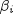 |
| |
 |
| |
| ||
| 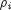 |
|
The gPROMS installation includes a simple Parameter Estimation example - it is highly recommended that you take a look at this. You can access this by clicking on the browse examples button on the gPROMS Tool bar and then navigating to General capabilities\Model Validation\ReactorEst.gPJ (as shown below). This section explains the features of the model.
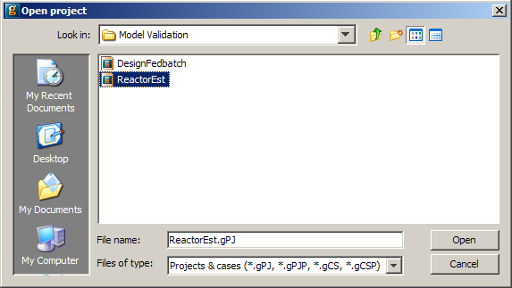
Browsing for the Batch Reactor Parameter Estimation example in the gPROMS distribution directory.
The example considers the batch reactor shown in the figure below. The reactor is used to carry out the following liquid-phase endothermic reaction:
An electrical heating element is used to provide the necessary heat to the reactor. The duty of this heating element is the control variable in the experiment.
Experimental and theoretical evidence indicates that the order of the reaction with respect to both A and B is one. We also know that the kinetic constant of the reaction follows an Arrhenius-type temperature dependence relationship. Based on this information, and assuming perfect mixing and ideal liquid mixture behaviour, we can construct the following mathematical model for the process:Component mass balance
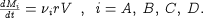
Energy balance
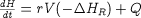
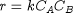
Arrhenius temperature dependence
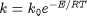
Component concentrations
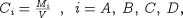 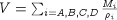
Energy content
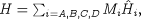 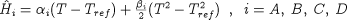
The tables below summarise the parameters and variables that appear in this model.
| Model Parameters | Description | |
| E | Reaction activation energy | |
| k0 |
| |
| Tref |
| |
| 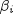 |
| |
| |
| |
| ||
| 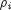 |
|
| Model Variables | Description | |
| Ci | Molar concentration of component i | |
| H |
| |
| 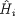 |
| |
| k |
| |
| Mi |
| |
| Q |
| |
| r |
| |
| T |
| |
| V |
|
Before this model can be used to simulate or optimise the operation of the reactor, all parameters that appear in it must be given fixed values.
Imagine, however, a situation where the kinetic characteristics of the reaction are unknown. That is, we do not know the values of
k0, E and  . In order to determine these, we can perform a number of experiments and measure the values of some or all process
variables.
. In order to determine these, we can perform a number of experiments and measure the values of some or all process
variables.
Four experiments have been performed, all under identical conditions. The duration of each experiment is 400s, the reactor is initially loaded with 100 mol of A, 100 mol of B, 1 mol of C and 1 mol of D, and the initial temperature is 293K. The heating element power supply is set to 505kW for the first 100s of operation and to zero thereafter. The experimental conditions are summarised below:
| Initial conditions | Heating policy |
|---|---|
MA = 100 mol MB = 100 mol MC = 1 mol MD = 1 mol T = 293 K | Q = 505 kW, 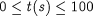 Q = 0, |
The data from four typical experiments are shown in the table below. The reactor temperature and the concentrations of reactant A and product C are automatically measured every 10 seconds.
| Experiment # | Time t (s) | Temperature T (K) | CA (mol m-3) | Cc (mol m-3) |
|---|---|---|---|---|
| 1 | 10 20 30 40 50 ... | 412.549 504.179 603.486 715.300 837.841 ... | 3746.911 2518.600 1504.120 883.783 548.051 ... | 898.552 2358.859 3634.895 4407.922 4849.769 ... |
| 2 | 10 20 30 40 50 ... | 411.804 504.530 604.027 714.709 837.154 ... | 3700.752 2520.929 1502.396 894.412 545.142 ... | 898.216 2380.372 3626.625 4388.874 4828.031 ... |
| 3 | 10 20 30 40 50 ... | 412.823 503.740 604.359 715.539 836.518 ... | 3705.683 2513.977 1516.819 895.847 551.290 ... | 896.799 2386.384 3633.759 4419.044 4796.965 ... |
| 4 | 10 20 30 40 50 ... | 411.235 503.830 603.157 716.325 837.703 ... | 3711.353 2526.062 1527.653 895.004 543.662 ... | 902.858 2409.363 3653.779 4400.964 4824.272 ... |
We note that, for any given set of values of the unknown parameters, the model equations can be solved to predict the reactor behaviour at the experimental conditions. For instance, the plots below compares the predicted variation of CA(t) and T(t) for k0 = 6.5*10-4 m3mol-1s, E = 20000J/mol and = 55000J/mol, against the data obtained from the first experiment. It can be seen that the model predictions are rather poor.
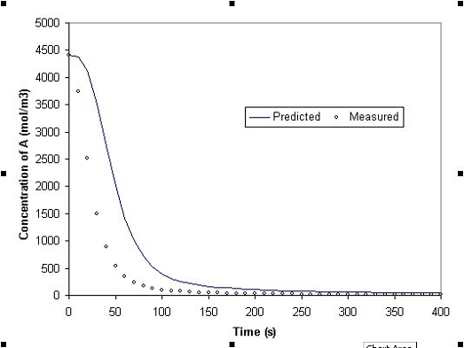
Comparison of experimental composition data with model predictions based on nominal values of
k0, E and 
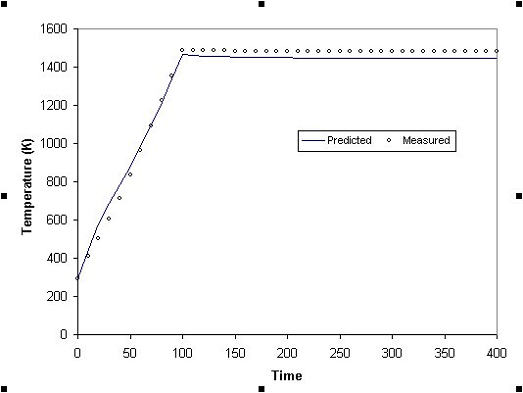
Comparison of experimental temperature data with model predictions based on nominal values of
k0, E and
 , in order to maximise the probability that the model will predict the values obtained from the experiments. This is the objective
of the Parameter Estimation problem.
, in order to maximise the probability that the model will predict the values obtained from the experiments. This is the objective
of the Parameter Estimation problem.In our example we will assume that the following initial guess and bounds hold for the 3 different parameters of interest:
The Arrhenius coefficient, k0 (gPROMS pathname R101.ARRHENIUSCONSTANT),
has an initial guess 5E-4 and the lower and upper bounds on its value are 1E-4 and 1E-3 respectively.
The reaction activation energy, E (gPROMS pathname R101.ACTIVATIONENERGY), has an initial guess
of 15000 and the lower and upper bounds on its value are 10000 and 20000 respectively.
The heat of reaction, 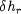 (gPROMS pathname R101.REACTIONENTHALPY), has an initial guess of 55000 and the lower and upper bounds
on its value are 35000 and 75000 respectively.
Here the measured variable is assumed to be described by the same variance model for each of the experiments that were performed. Hence:
The concentration of reactant A, CA (gPROMS pathname R101.C(1)), and the
concentration of product C, CC (gPROMS pathname R101.C(3)), are both described
by HETEROSCEDASTIC models on the PREDICTED_VALUES. The initial guess for  is 0.1, with lower and upper bounds of 0.01 and 3 respectively, while the initial guess for is 0.5 with bounds of 0 and 1.
is 0.1, with lower and upper bounds of 0.01 and 3 respectively, while the initial guess for is 0.5 with bounds of 0 and 1.
The reactor temperature, T (gPROMS pathname R101.T), is also described by a HETEROSCEDASTIC
model. The initial guess for  is 0.1, with bounds of 0.01 and 3. However,
is 0.1, with bounds of 0.01 and 3. However,  is fixed at zero (the measurement error for the temperature is a constant value and does not depend on the size of
T).
is fixed at zero (the measurement error for the temperature is a constant value and does not depend on the size of
T).